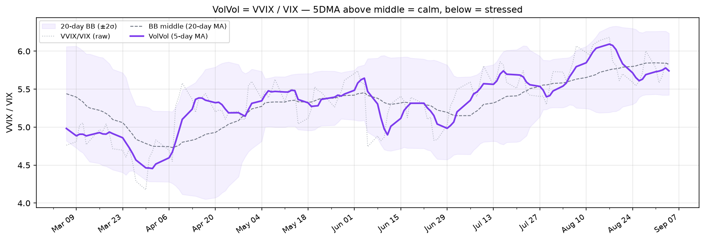
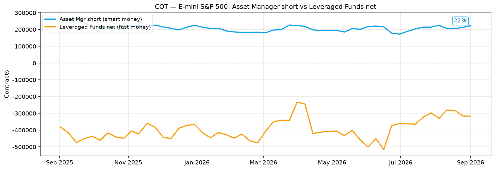
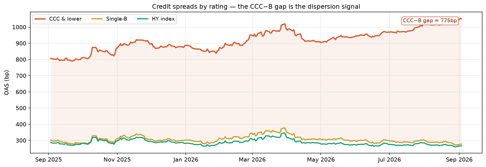

butterflow 투자 노트¶
변동성을 적이 아닌 연료로 바라보는 개인 투자자를 위한 기록.
수학과 데이터에 기반한 투자 원칙을 연구하고 정리합니다. AI가 시장을 지배하는 시대에도 변하지 않는 것 — 복리의 수학, 변동성의 구조, 그리고 시간이라는 무기.
📊 일일 대시보드 (9월 5일 16시 37분 업데이트)¶
갱신 일정 자세히
- 크론: 매일 03:10 UTC 화–토(장 마감 후 정식 EOD) + 미 장중 매시(14~21 UTC 평일) 스냅샷 갱신 — 장중엔 주로 Yahoo 소스(MOVE·FedWatch) 숫자가 신선해지고, Cboe·FRED·CFTC 타일은 직전 마감/발표 값을 유지
- 갱신 대상: VIX TS · COR+SKEW · VolVol · Kelly × VIX · MOVE · COT · FedWatch · 신용 스프레드 차트 + 카드 숫자 — 모두 한 사이클에 함께 갱신
- 데이터 출처: Cboe (VIX·COR/SKEW·VVIX) · Yahoo (MOVE·Fed Fund 선물) · FRED (신용 OAS·EFFR) · CFTC (COT)
- 원천 주기: 대부분 매일(EOD) 갱신 — 단 COT는 주간(금요일 발표, 그 주 내내 동일)이고 신용 스프레드는 약 1영업일 지연. 스크립트는 매일 모두 다시 그리지만 이 둘은 원천 주기대로만 값이 바뀜
- 변동 가능성: GitHub Actions 크론 ±30분 지터 가능. 드물게 Cboe가 그날 종가를 늦게 올려서 그 사이클이 전일 데이터로 끝나면, 라이브 차트는 다음 영업일 사이클에 자동으로 따라잡고 슬라이더 아카이브는 매 사이클의 14-day gap-fill 패스로 빠진 날을 채워 넣음 — 결과적으로 데이터 손실은 없음
💰 메인 자본 — 권장 주식/현금 비중¶
| 단계 | 값 |
|---|---|
| ① Kelly × VIX 베이스 (VIX 14.5) | 100% |
| ② COR/SKEW 🟡 경계 | × 1.00 |
| ③ VIX TS 🟢 콘탱고 (정상) | × 1.00 |
| ④ VolVol 🔴 긴장 | × 1.00 |
| 권장 비중 | 주식 100% / 현금 0% |

위 비중은 메인 자본 내부 기준 — 공격 자본은 다음 카드, 전체 자산 환산과 분할 비율(80/20·90/10·95/5)은 페이지 상단 마스터 바에서 선택. 공식: f = μ−r ÷ (VIX/100)² (최대 100% cap). Kelly 분수(¼·½·¾·Full) × 프리미엄(5·7·9%) × 위험 민감도(loose 0.95/0.85 · standard 0.90/0.75 · tight 0.85/0.65) 조합으로 최종 비중 산출. 곡선 그림과 카드 숫자 모두 선택한 Kelly 분수·μ−r에 동기화됨 — 선택한 분수의 라인이 굵게 강조됨. 교육 목적 · 투자 권유 아님 · 자세히 →*
⚡ 공격 자본 — 위기 발동 신호¶
| 트리거 | 현재 | 단계 / 충족 |
|---|---|---|
| VIX 5일 지속 — 40+ ×½ / 50+ ×1 / 60+ ×1½ | 14.5 (5일 최저 14.3) | 🟢 미발동 (0) |
| COR90D > 55 + SKEW > 150 | 28.3 / 151.6 | ❌ (0) |
| 30일 SPX 누적 −20% | -1.0% | ❌ (0) |
| 공격 자본 투입 비중 | 🟢 0% (대기) | — |
공격 자본은 시간 우위를 행사하는 위기 매수 현금으로 별도 운용. T1(VIX 지속)은 40/50/60 단계별 가중치, T2·T3는 0/1 이진. 총 가중치를 3으로 나눠 투입 % 산출, 100% 초과는 cap. 위 카드의 투입 %는 공격 자본 내부 기준 — 전체 자산 환산과 분할 비율은 페이지 상단 마스터 바 참조 · 자세히 →
VIX Futures Term Structure¶
| 항목 | 값 | 상태 |
|---|---|---|
| VIX 현물 | 14.53 | — |
| Front (M1, 2026-09-16) | 16.27 | — |
| M2 − M1 (단기) | +1.87 | 🟢 콘탱고 (정상) |
| M7 − M4 (중기, VXZ 영역) | +1.75 | 🟢 콘탱고 (정상) |
Cboe 결제 데이터(CFE) 기준. Vixcentral 대안으로 활용 가능 · 지난 1년 곡선을 슬라이더/▶로 재생 가능 · 해석 가이드 →
COR + SKEW 대시보드¶
| 신호 | 값 | 상태 |
|---|---|---|
| Term Structure (COR1Y − COR1M) | 5.6 | 🟢 정상 |
| COR90D (동조화 수준) | 28.3 | 🟢 정상 |
| SKEW (꼬리 위험) | 151.6 | 🟡 경계 |

Cboe COR + SKEW 지수로 본 시장 분산 효과와 꼬리 위험 · 자세히 →
VolVol — VVIX / VIX 비율 지표¶
| 신호 | 값 | 상태 |
|---|---|---|
| VolVol = VVIX / VIX (5DMA) | 5.741 | 🔴 긴장 (5DMA < 중간선) |
| BB 중간선 (20일 이평) | 5.830 | — |

5일 이평선이 20일 볼린저밴드 중간선 위에 있으면 변동성이 줄어드는 안도 국면, 아래면 긴장 국면. 중간선을 가르는 크로스가 시장 심리 전환 신호. 공식 지표가 아닌 '심리적' 보조 신호 — 단독 매매 판단보다는 VIX TS·COR/SKEW와 함께 시장 분위기를 읽는 용도 · 자세히 →
MOVE — 채권시장의 VIX¶
| 신호 | 값 | 상태 |
|---|---|---|
| MOVE 지수 | 73 | 🟢 평온 |
| 4주 변화 | +1 | — |
| 1년 백분위 | 54% | — |

ICE BofA MOVE — 미 국채 금리의 예상 변동성(단위 bp), 2026-09-04 기준. 80 미만 평온 · 160 초과 발작. VIX와 갈라지면 채권이 먼저 겁먹은 신호 · 자세히 →
COT — S&P 500 기관 포지셔닝¶
| 신호 | 값 | 상태 |
|---|---|---|
| Asset Manager 숏 (스마트 머니) | 222.6천 계약 | 🟡 숏 누적 — 기관 하락 대비 |
| 숏 4주 변화 (추세) | -2.7천 | — |
| Leveraged Funds 순포지션 (덤 머니) | -317.6천 | — |

CFTC COT · TFF (화 2026-09-01 포지션 · 금 2026-09-04 발표). Asset Manager(스마트 머니) 숏이 누적되면 기관이 하락 대비, 줄면 상승 예측. Leveraged Funds(덤 머니)는 반대 성향 참고용 · 자세히 →
FedWatch — 시장의 금리 경로 (Fed Fund 선물)¶
| 신호 | 값 | 상태 |
|---|---|---|
| 다음 FOMC (9/16) | +15bp | ⬆️ 인상 우세 |
| 내재 정책금리 (지금→6개월) | 3.63% → 4.08% | ⬆️ 인상 경로 |
| 6개월 내재 변화 | +46bp (≈ 1.8회) | — |

Fed Fund 선물(ZQ) 내재금리(100−가격), 2026-09-04 기준. 회의별 정확한 확률은 CME FedWatch에서 · 자세히 →
신용 스프레드 — 분산 신호¶
| 신호 | 값 | 상태 |
|---|---|---|
| HY OAS (지수 레벨) | 265bp | 🟢 낮음 (평온) |
| CCC−B 격차 (분산) | 775bp | 🔴 확대 중 |
| 올해 격차 변화 | +189bp | — |

ICE BofA 등급별 OAS (FRED) · 2026-09-03 기준. 지수가 잠잠해도 CCC−B 격차가 벌어지면 바닥 등급부터 값이 다시 매겨지는 후기 사이클 신호 · 자세히 →
무료 콘텐츠¶
수익률 기초¶
- 수익률, 복리, 그리고 로그차트 — 산술수익률 vs 로그수익률, 복리, 로그차트가 한 묶음인 이유
- 내 포트폴리오의 수익률은? — TWR vs MWR, 같은 거래 두 가지 답
- 수익률의 기댓값 — 확률 모델로 본 QQQ vs TQQQ
- 파생상품의 레버리지 사용료 — 같은 3배라도 비용은 70배 차이
- 네마녀의 날이 돌아왔다 — 6년 만에 부활한 개별주식선물(SSF), 실적 방향성 베팅에 왜 최적인가
옵션 분석¶
- 옵션의 기초 — 자동차 보험 비유로 풀어 보는 콜·풋·행사가·델타 (옵션 처음이라면 여기부터)
- 변동성 Skew — S&P500 지수 옵션의 "썩소"와 Implied Correlation, CBOE SKEW Index
- 채권시장의 VIX — MOVE 지수 — 미 국채 금리의 공포 게이지, %가 아닌 bp, VIX와 갈라질 때가 신호
- Hedging the Wings — 저비용 테일 리스크 헷지 (1:2 Put Ratio, SPY 구체 예시)
- 시장 심리 변동성 지수 — COR3M, IV Surface, Delta Skew + TradingView Pine Script
시장 데이터 도구¶
- COT 리포트 — 선물시장에서 기관의 의중 읽기
- FedWatch Tool — Fed Fund 선물로 금리 예측하기
- 신용 스프레드를 지표로 읽기 — 지수는 잠잠한데 CCC−B 격차는 확대, CDS 못 사도 FRED로 읽는 후기 사이클 신호
도구¶
- 몬테카를로 시뮬레이션 — 구글시트 + Python으로 투자 백테스팅
- Almanac Trader — 월별 Seasonality 분석 (구글시트 + Python)
- GEX 직접 계산하기 — Google Sheets + Python으로 감마 노출 계산
- 0DTE 감마 패턴 — 장중 GEX는 어떻게 변하는가
- 변동성 대시보드 — Correlation + Skew 추적 (Google Sheets + Python)
- VIX Futures Term Structure — 콘탱고/백워데이션 해석 (vixcentral 대안)
시리즈 (유료 전자책)¶
변동성을 연료로 쓰는 법 — 수학과 데이터로 풀어 쓴 개인 투자자용 완결 시리즈.
- 총 13편 / 179페이지, 다이어그램 90장+
- 공식은 사칙연산 수준, 나머지는 비유와 그림
- 한국 구매자는 크몽, 해외는 Gumroad에서 구매
| 시리즈 | 내용 | 편수 | 크몽 | Gumroad |
|---|---|---|---|---|
| 원칙편 (65p) | 섀넌의 도깨비부터 캘리 기준까지 | 4편 (1편 무료) | 구매 | Buy |
| 실행편 (37p) | VIX를 읽고 ETF+현금으로 비중 조절 | 3편 | 구매 | Buy |
| 확장편 (35p) | LEAP, Protective Put, Covered Call | 2편 | 구매 | Buy |
| 심화편 (42p) | 감마, 동적 헷지, GEX, 0DTE | 4편 | 구매 | Buy |
| 전 13편 번들 (179p) | 원칙편 + 실행편 + 확장편 + 심화편 | 13편 | 구매 | Buy |
번들은 네 시리즈를 한 번에 묶은 구성입니다.
모든 콘텐츠는 교육 목적으로만 제공됩니다. 특정 금융상품에 대한 투자 권유나 매수·매도 추천이 아니며, 모든 투자에는 원금 손실의 위험이 있습니다.